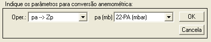
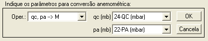
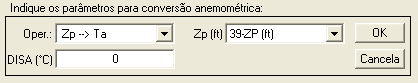

| Menu
Funções |
|
Conversões
Anemométricas
Essa função
permite realizar diversas conversões
anemométricas de acordo com a atmosfera padrão ISA+ΔT.
Clique no menu “Funções ►
Conversões anemométricas” ou no botão na
Barra de Ferramentas.
A Caixa de
Diálogo solicitará que o usuário indique os
parâmetros para a conversão, como nos exemplos a seguir:



● No campo “Oper.”, indique
a operação de conversão desejada. Os demais campos se atualizarão
conforme a
seleção.
● No campo
“DISA (°C)”, indique a variação de temperatura
da atmosfera ISA (ΔTISA), caso aplicável.
● Nos demais
campos, indique o(s) parâmetro(s) de entrada
solicitado. Os gráficos se atualizarão
automaticamente conforme a seleção.
| Nota: Os parâmetros
devem estar nas unidades solicitadas para a correta conversão. |
As conversões
disponíveis são as seguintes:
|
Operação |
Variáveis de
Entrada |
Variável de
Saída |
pa  Zp Zp |
pa (mb) |
Zp
(ft) |
|
Zp |
Zp
(ft) |
pa
(mb) |
|
qc |
qc
(mb) |
Vc
(kt) |
|
Vc |
Vc
(kt) |
qc
(mb) |
|
qc,
pa |
qc
(mb) pa
(mb) |
Mach |
|
M |
Mach |
qc/pa
(adm) |
|
Zp |
Zp
(ft) ΔTISA
(°C) |
Ta
(°C) |
|
Ta |
Ta
(°C) ΔTISA
(°C) |
Zp
(ft) |
|
Zp,
Ta |
Zp
(ft) Ta
(°C) |
ρ
(kg/m³) |
|
Zp,
Vc |
Zp
(ft) Vc
(kt) |
Mach |
|
Zp, M |
Zp
(ft) Mach |
Vc
(kt) |
|
Vc, M |
Vc
(kt) Mach |
Zp
(ft) |
|
M, Ta |
Mach Ta
(°C) |
Va (kt) |
|
Va, M |
Va (kt) Mach |
Ta
(°C) |
|
qc, pa |
qc
(mb) pa (mb) |
Ve (kt) |
|
Zp, Vc |
Vc
(kt) Zp
(ft) |
Ve (kt) |
|
Zp, QNH |
Zp
(ft) QNH
(mb) |
Zp ajustada (ft) |
|
Zp, Z |
Zp
(ft) Z
(ft) |
QNH
(mb) |
A descrição das
variáveis é apresentada a seguir:
|
Variável |
Descrição |
Unidade |
|
qc |
Pressão
dinâmica compressível |
Milibares |
|
pa |
Pressão
atmosférica |
Milibares |
|
Zp |
Altitude-pressão |
Pés |
|
Vc |
Velocidade
calibrada |
Nós |
|
M |
Número de Mach |
Adimensional |
|
Ta |
Temperatura
ambiente |
Graus Celsius |
|
ΔTISA |
Variação de
temperatura ISA |
Graus Celsius |
|
Va |
Velocidade
verdadeira |
Nós |
|
Ve |
Velocidade
equivalente |
Nós |
|
ρ |
Densidade do ar |
Quilogramas por
metro cúbico |
|
QNH |
Ajuste de
altímetro |
Milibares |
|
Zp adj |
Altitude-pressão
com ajuste altímetro |
Pés |
|
Z |
Altitude geométrica |
Pés |
| Nota: Para o
funcionamento das operações é necessário ter instalado o Toolbox
de anemometria do IPEV no caminho do MATLAB. |
| Nota: Caso algum
valor do(s) parâmetro(s) de entrada não seja coerente para a operação
solicitada (pressão, velocidade ou Mach negativos), o R_DAT avisará o usuário e
atribuirá “NaN” para
esses pontos. |
Ao clicar “OK”,
o usuário deverá indicar o tipo dos dados de
entrada (básicos ou calibrados). Essa etapa é apenas para a
apresentação do
nome default da etapa seguinte, em
que o usuário deverá fornecer o nome do novo parâmetro:

Após definir o
nome e pressionar “OK”, o novo parâmetro será
acrescentado à penúltima posição das matrizes de trabalho (antes de “No.OBS.”).
| |
Interpolação
tabular |
Conversão
de
unidades |
|